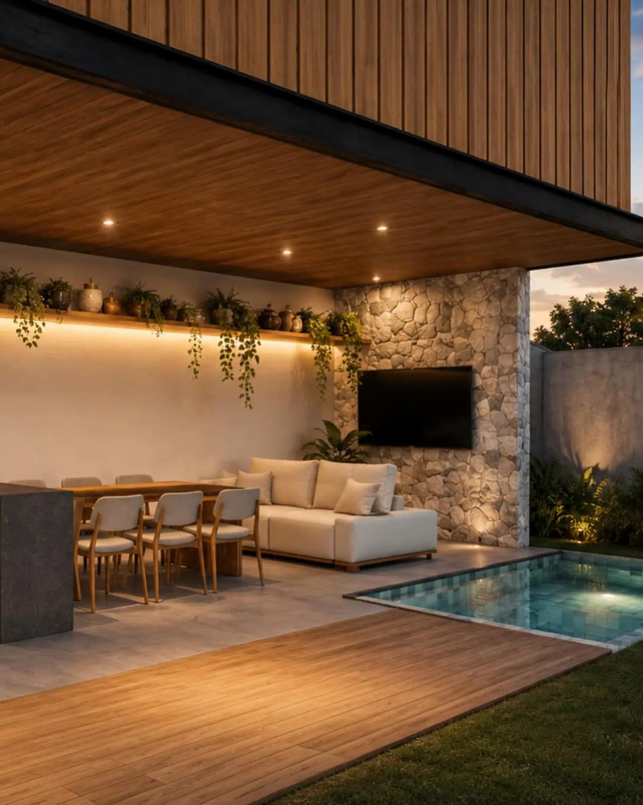
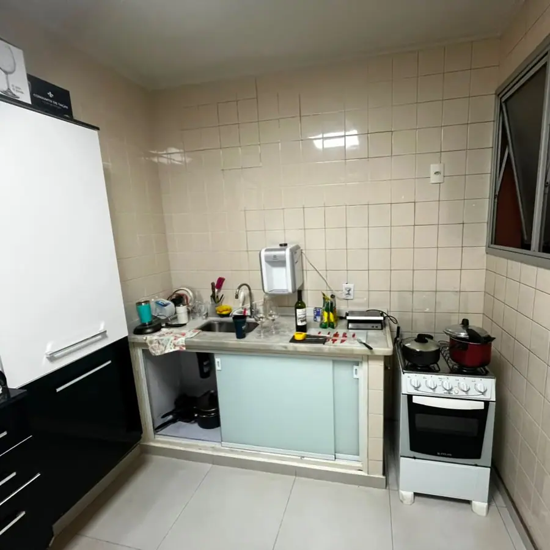
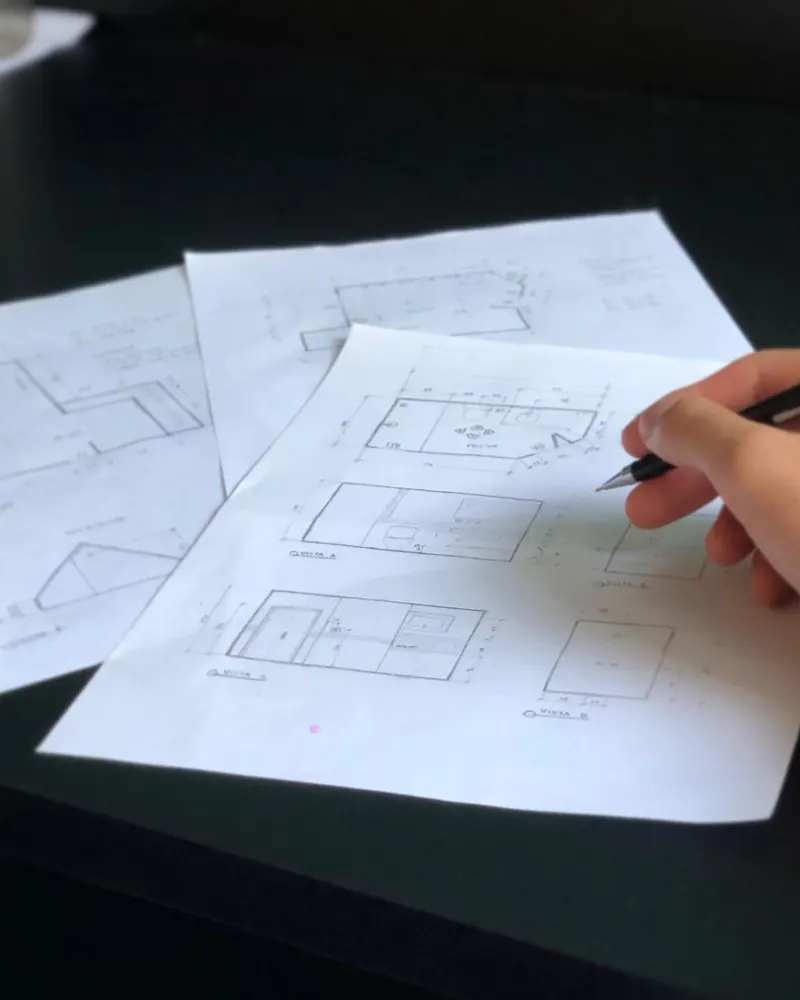
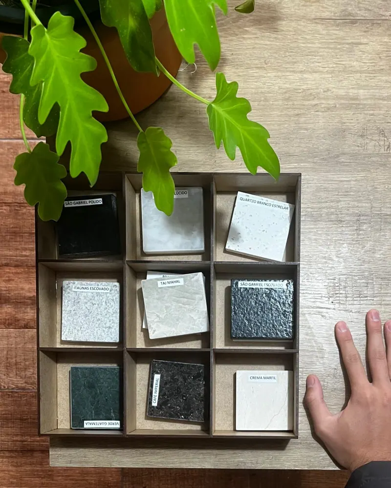
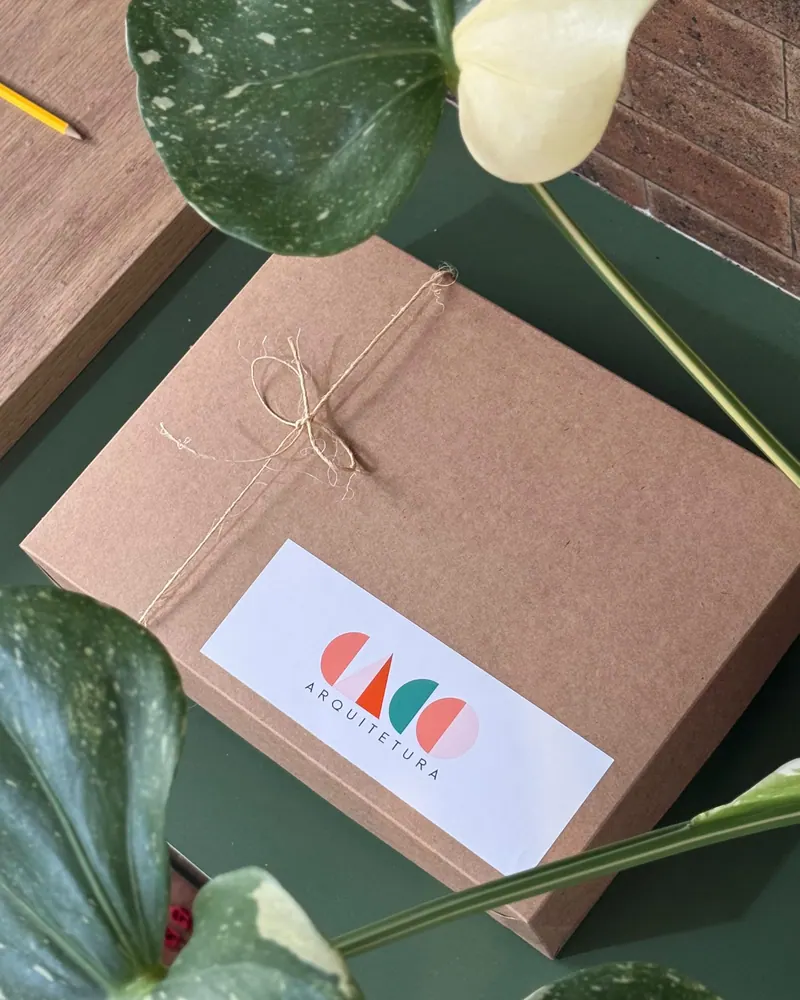
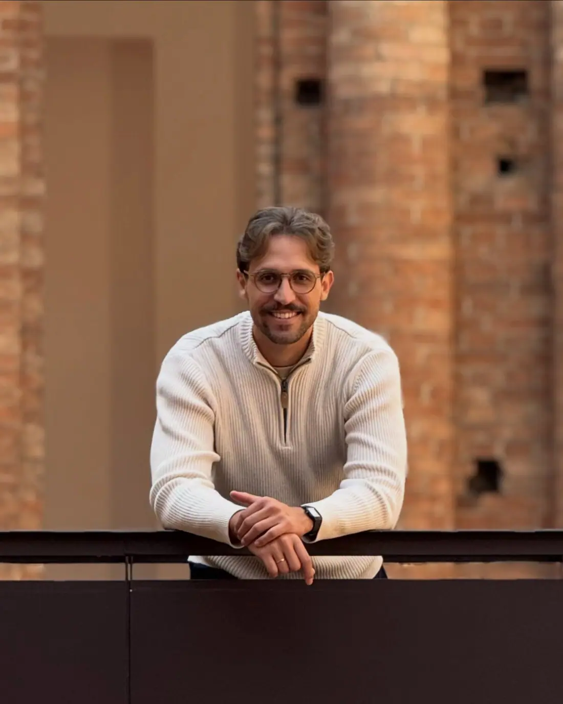

Arquitetura e interiores para casas, apartamentos e espaços comerciais em Salto e região. Presencial ou online, com projetos que fazem sentido para quem vive neles.

- Casas e interioresResidências novas, reformas e apartamentos.
- Também comercialLojas, clínicas e consultórios.
- Presencial ou onlineAtendimento em Salto e região.
- Caderno técnicoNa entrega, com imagens, plantas e detalhamentos.
Casa boa é aquela que abraça
Um projeto bonito começa antes do desenho. Cliente, imóvel, experiência de uso e contexto se encontram em um conceito, e só depois viram planta, imagem e detalhe.
- Escuta primeiroO briefing busca entender o que você deseja de forma objetiva e subjetiva, e como a sua família vive.
- Um conceito para cada casaCada projeto ganha uma ideia central, como a Casa Abraço, que mistura pedra, madeira, cobogó e vegetação.
- Detalhe que sustenta a obraPlantas, marcenaria, iluminação e materiais são documentados para quem vai executar.
Casas, interiores e comércios
Uma seleção de trabalhos da Caco. Cada imagem indica se é uma imagem 3D do projeto ou uma foto.
Imagens do portfólio da Caco Arquitetura (Instagram @caco.arquitetura). Imagem 3D mostra o projeto, não a obra concluída.

Antes e depois
Uma cozinha escura e pouco funcional deu lugar a um ambiente iluminado, prático e com identidade. Alterne para comparar.
Do projeto da casa ao interior pronto
Dois caminhos, conforme o momento: projeto arquitetônico para construir, ou interiores para reformar e transformar um ambiente.
Para quem vai construir ou reformar a casa por inteiro. Escolha um pacote para ver o que ele inclui.
Para casas e apartamentos que precisam de um ambiente que represente quem mora ali. Escolha uma modalidade.
Etapa por etapa, sem surpresa
As etapas do projeto, da primeira conversa à entrega do caderno técnico.
Briefing
Reunião para entender o desejo objetivo e o subjetivo, para chegar a um projeto acertivo.
Formulário de referências
Um formulário respondido por você ajuda a entender melhor as questões estéticas.
Anteprojeto
Planta de layout e definição do conceito do projeto.
Revisões do anteprojeto
Se necessário, duas revisões nesta etapa estão contempladas.
Imagens 3D
Visualização tridimensional dos espaços e dos materiais, com imagens realistas.
Revisões do 3D
Se necessário, duas revisões, para alterações de materiais, não de layout.
Aprovações
Projeto para aprovação de condomínio ou prefeitura.
Entrega final
Caderno técnico com todas as imagens, plantas e detalhamentos contratados.




Arq. Júnior Lira
Júnior é o arquiteto à frente da Caco Arquitetura, em Salto. Atende casas, apartamentos e espaços comerciais, presencialmente ou online.
A ideia que orienta o escritório está no próprio cartão: fazendo projetos com alma. Ambientes que tenham significado, que façam sentido para quem você é e para o jeito como a sua família vive.
Entre os trabalhos estão residências em Salto, cozinhas e banheiros reformados, uma loja de semijoias e uma clínica. Acompanhar o cliente nas lojas, sentindo o tecido e comparando cores, também faz parte do trabalho.
Projetos que criam memórias, assim como os pisos de caquinho.
Perguntas frequentes
Onde a Caco atende?
Que tipos de projeto são feitos?
Como começa?
Quanto custa?
Quantas revisões estão incluídas?
Dá para ter ajuda na compra de materiais e na obra?
Vamos pensar a sua casa?
Conte em poucas linhas o que você quer projetar. O WhatsApp abre com a mensagem pronta e você revisa antes de enviar.
- WhatsApp: (11) 91351-8113
- Instagram: @caco.arquitetura
- Salto e região, presencial ou online.